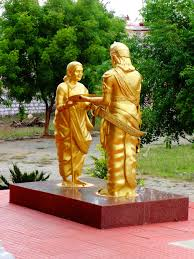
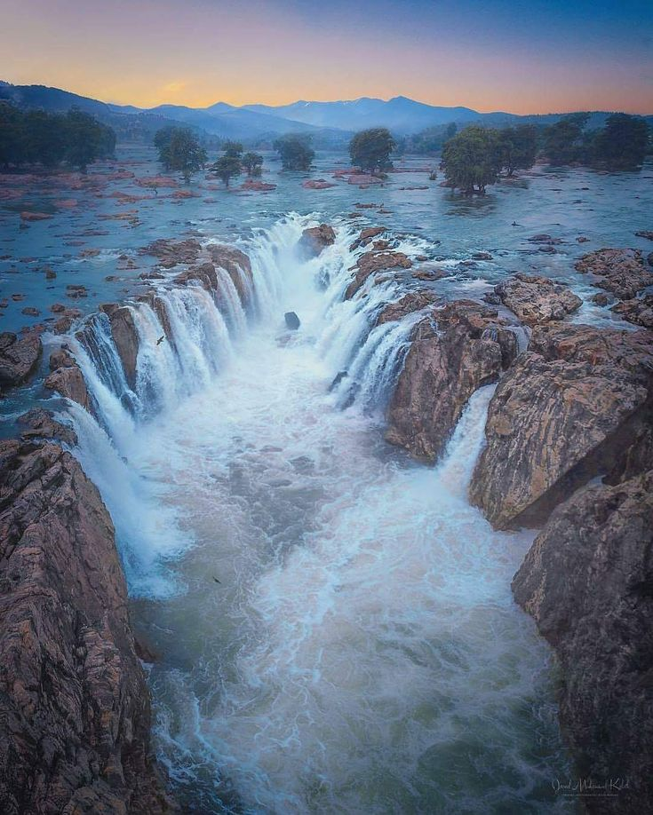
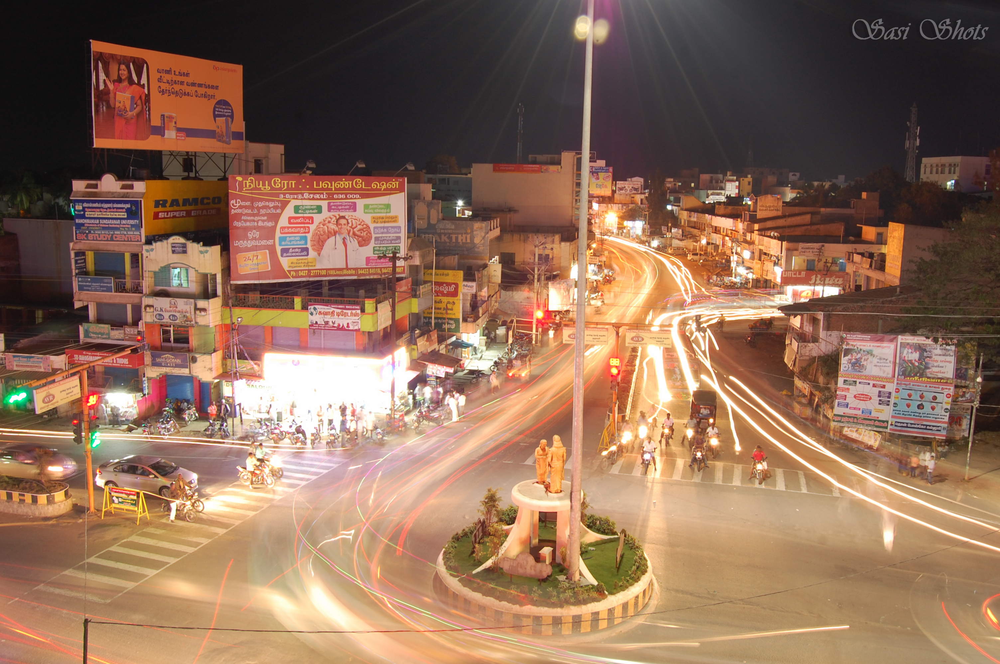

About Dharmapuri
Dharmapuri (also known as Thagadur)is one of the districts in Tamil Nadu which is special for the river Kaveri called Hogenakkal ,famous for temples ,churches and mosque.
It is located in the northwestern part of Tamil Nadu, India. Its geographical area is 4,497.77 square kilometers
. According to the 2011 census it was recorded a population of 1,506,843 for the district. It's also known as a major
mango-producing region for the scenic beauty.
Traditions and festivals
In my Hometown ,various traditions are followed and celebrated irrespective of religions.
Some of the festivals are celebrated for the hindu gods which is celebrated for a week.
The famous food which is a traditional sweet and a medicine is called Opputtu which is made up of
natural sugar called Vellam.
My Places of Interest
- Murugar Kovil
- The temple is very traditional and famous for the pillars which does not touch the ground.

- Adhiyaman Palace
- Historically ,the town Dharmapuri (Thagadur) is ruled by the King Adhiyaman ,who gave the gooseberry to Avayyar for the immortal life ,the palace was built in memorial of him.

- Hogenakkal
- The district is special for the river Kaveri, which is the Gateway for the Kaveri flowing from Karnataka into Tamil Nadu.

A personal Note
Dharmapuri is special to me were i was brought up from my childhood still now. Since Dharmapuri is an agricultural place , i love the fresh air , greenary scenes, flows of forest, mountains covering the city.
